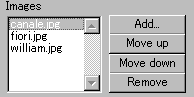
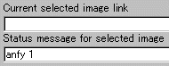
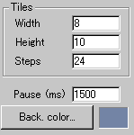
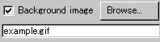
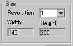

|
This applet displays series of images with mosaic
transition at a desired speed. Each image can be assigned a unique
URL so that you can use this applet as a menu.
[For more technical
information about the available parameters, click here.]
Most parameters are self-explanatory
and you can always see brief description of each parameter by moving
the mouse pointer over the wizard.
 |
Here, you need to specify images to be shown.
By clicking "Add" button, open file window,
and you select desired image file as many times as you need.
|
You can change the order of displaying images by
"Moving up" or "Moving down" image
file names.
 |
While selecting a image file name,
you can specify a URL and a statusbar message. |
 |
Once you have added slideshow images, you
now need to set tile transition parameters.
"Width" and "Height"
on the left picture represent the width and the height of
each tile, and NOT those of the applet area.
|
Loaded images are cut down into pieces (tiles) during
the course of image transitions.
During the transitions, tiles rotate at the speed
specified by "Step", which takes a value between
8 and 32.
With "Back colour", you can specify
the applet background colour.
 |
Or, alternatively, you can define a background
image. Check "Background image" box and enter the
image file name in the space below. |
 |
Finally, here is the "Resolution"
parameter and the applet size. Resolution parameter decides
how bigger the actual image is displayed. |
For example, the value 3 gives three times as big
image size as the actual image has. So, it works as a zooming parameter.
Do not set too high value, unless you love terrible picture!
Now go to expert menu
and proceed your applet configuration.
|